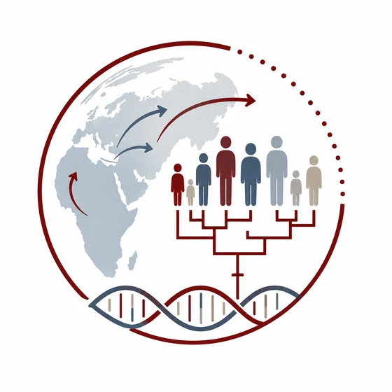
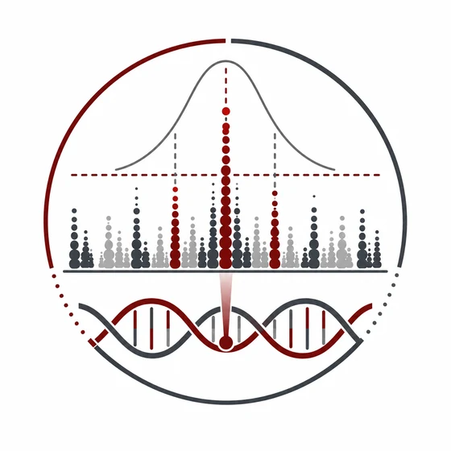
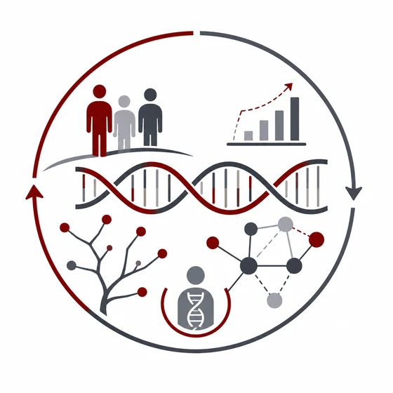

Reconstruct recent multi-population migration history by using identical-by-descent sharing.
Zhang W.*, Yuan K.*, Wen R., Li H. & Ni X. J. Genet. Genomics.
 Human Evolutionary and Statistical Genetics Lab
Computational Methods for Population History and Complex Disease
Human Evolutionary and Statistical Genetics Lab
Computational Methods for Population History and Complex Disease
Research Areas

01Understanding human diversity through population history, admixture, and natural selection.
Jump to area
02Developing methods for genetic discovery, fine-mapping, and biological interpretation.
Jump to area
03Connecting evolution, genetic variation, and disease biology through integrative computational frameworks.
Jump to areaDirection 01
Focus
Human populations have been shaped by migration, admixture, demographic change, and natural selection over tens of thousands of years. Our research develops statistical and computational methods to reconstruct these evolutionary processes and understand how they have generated the patterns of genetic diversity observed in present-day populations.
We have developed a series of methods for inferring complex admixture histories, including iMAAPs, MultiWaver, HierarchyMix, and HierMultiMix, which enable reconstruction of multi-wave admixture processes involving multiple ancestral populations. We are also interested in the role of archaic hominin introgression in shaping human diversity and adaptation. Through the ArchaicSeeker series, we developed methods for detecting archaic introgressed sequences and reconstructing their evolutionary history. These approaches helped reveal the complex archaic ancestry of the Tibetan EPAS1 region and provided new insights into the evolutionary history of high-altitude adaptation. More recently, we have developed AdmixIBD, a reference-free framework that leverages identity-by-descent segments to infer population admixture history without requiring predefined ancestral reference populations.
By combining population-genetic theory with large-scale genomic data, we aim to better understand the demographic and evolutionary forces that have shaped human populations and generated the diversity that underlies both adaptation and disease.
Direction 02
Focus
Genome-wide association studies have identified thousands of loci associated with human diseases, yet translating these discoveries into biological mechanisms remains a major challenge. Our research develops statistical and computational methods to improve genetic discovery, fine-mapping, and post-GWAS interpretation across diverse populations.
A major focus of our work is leveraging genetic diversity to improve the identification of causal variants and target genes. We developed SuSiEx, one of the first cross-ancestry fine-mapping frameworks capable of integrating evidence across multiple continental populations while accounting for ancestry-specific genetic architecture. Applied to large psychiatric genetics datasets, SuSiEx substantially improved fine-mapping resolution and identified many additional high-confidence causal variants compared with single-population analyses. Building upon this work, we are developing next-generation methods for admixed populations that jointly model local ancestry and linkage disequilibrium to improve genetic discovery in populations that have historically been underrepresented in genetic studies.
In addition to method development, we apply these approaches to large-scale biobank and sequencing datasets to study psychiatric disorders, inflammatory bowel disease, and other complex traits. Our long-term goal is to build statistical frameworks that bridge genetic association signals and biological mechanisms, enabling more precise interpretation of disease-associated loci.
Direction 03
Focus
Human disease genetics cannot be fully understood without considering evolutionary history. Demographic events, admixture, natural selection, and archaic introgression have all contributed to shaping present-day patterns of disease risk and genetic architecture. Our research seeks to understand how evolutionary processes influence disease biology and to develop analytical frameworks that integrate evolutionary genetics with modern disease genetics.
We are particularly interested in understanding how population history influences genetic discovery and how evolutionary information can be incorporated into statistical models for disease gene mapping. This work includes developing fine-mapping methods that leverage differences in linkage disequilibrium across populations, investigating the contribution of archaic introgression to disease risk, and studying how demographic processes shape the distribution of disease-associated variation. We also develop integrative frameworks that combine population genetics, statistical genetics, and functional genomics to identify the biological mechanisms through which genetic variation influences human disease.
Our long-term vision is to establish a unified framework that leverages human genetic diversity to connect evolution, molecular function, and disease biology. By integrating insights from population genetics, statistical genetics, and functional genomics, we aim to uncover the evolutionary origins of disease susceptibility and improve our understanding of the biological mechanisms underlying complex human diseases.
Contact

Indiana University School of Medicine